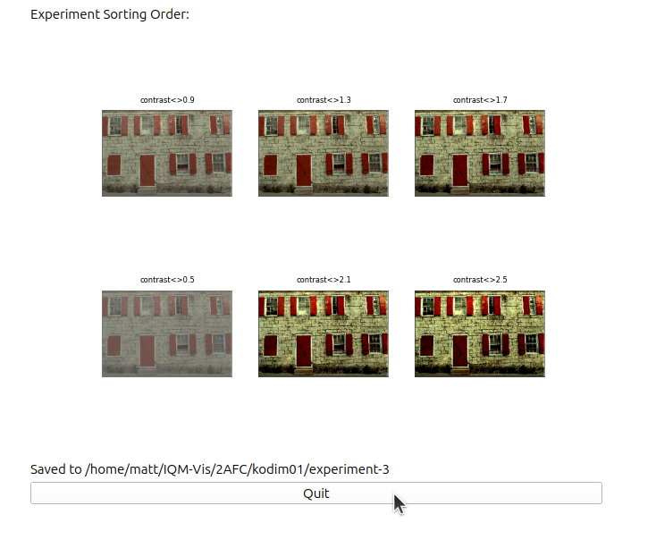

View the whole notebook: https://github.com/mattclifford1/IQM-Vis/tree/main/dev_resources/docs/notebooks/Tutorial_4-running_a_2AFC_experiment copy.ipynb
Tutorial 4: Running a 2AFC Experiment
In this tutorial we will go through how to setup and run a 2 Alternate Forced Choice experiment.
First you need to Launch the UI with your required customisations (see previous tutorials).
Things to setup: - Load your own images and select the image which you want to test
Make sure that the settings are correct in the ‘image settings’ tab (Image Display Size, Luminance Calibration etc.)
Only the required transforms are selected in the ‘experiments’ tab with the correct range and number of steps
Check that the Root Save Folder is correct
Once you are ready, press the ‘Run 2AFC Experiment’ button, this will launch the experiment:

Experiment Screen
The first screen will show the settings and images used for the experiment. Double checl the Save folder matches what the experiment type and image name, a unique experiment number will be generated based on any saved experiments that use the same image but use different transforms or processing etc.

The Expected Number of Comparison shows how many clicks the user should expect to do.
If everything is correct, click the ‘Setup’ button. This will take you to the experiment information screen for the participant to read.
Experiment Info
This will show the information for the participant. When they are ready, click the ‘Start’ button.

Experiment Running
The experiment uses the quick sort algorithm with the user giving the pairwise most similar image until the images are sorted.
The user needs to click on the image which they believe is most similar to the reference image.

Experiment Finished
Once the images are sorted you will be shown the sorting order and the folder when the experiments are saved.
The save folder shown contains the experiment images and a csv file with all the experiment runs
Visualising the experiment results
The experiment results will be automatically loaded into the ‘Correlation’ tab in IQM-Vis
On the plot you can click on points to view the corresponding transformation that might disagree with the correlation with a metric.
Use the right and left buttons below the graph to scroll through the different selected metrics.
The Spearmean’s and Pearson’s correlation will be shown in the figure title.

N.B. make sure the UI has that transformation loaded and the metrics selected you want to compare against.
To load previously saved experiments the experiment using the menu option: File>Load Human Scores, or use the ‘Load Experiment’ button below the graph.